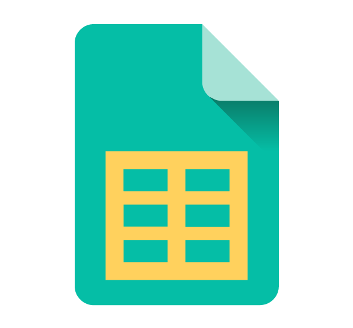

A Shopify app solution for e-commerce insights
Have you ever wondered what your customers are adding to their carts? As shop owners, we created Cart Insights for the crucial insights and data that we get when we see exactly what items every shop visitor is adding to their shopping carts.
Shopping cart additions are the first step in a shop's conversion funnel, and knowing what your shoppers are saving in their carts will give you a better understanding of customer behavior, shopping patterns, and product popularity.
Cart Insights app installation is simple and involves no technical setup or configuration. As soon as it is installed, it begins recording your shop's customer cart activity! App is server-side so there is no speed score hit to your shop. The optional CartLink feature automatically adds a lightweight Javascript snippet with a minimal impact to your site's speed score.
Cart Insights provides much more detail than the admin dashboard's top products lists, abandoned carts, and summaries -- it allows you to view each customer's cart activity. View timelines of customer cart activity that show what products and variants were added to a cart and what products were later removed from a cart. Cart Insights shows variant-specific images of each cart item, so you can see at a glance what sizes, colors and styles are most popular.
Customer details include referral data, landing page, discount code, email, phone number, shipping destination, checkout reached status, and conversion/order placed status. The further a customer gets through the checkout funnel, the more information is available to view.
Cart Insights also provides real-time Top Products and Top Product Variants summary reports so you can view the most popular products for different periods of time.
The optional and configurable emailed Cart Insights Daily Report provides an essential daily review of your shop's customer cart activity. This report arrives when you want it, and it's the perfect resource and daily summary for a busy e-commerce professional!
Key Features
- View Top Products and Top Product Variants summary reports
- CSV Report cart data export for spreadsheet programs
- View each customer's shopping cart contents
- See cart item variant-specific images, quantity, and variant details
- See added and removed cart items
- Simple and intuitive visual UI for fast reporting
- CartLink front-end integration records customer browser data, filters search bot activity, and links logged-in Customer Accounts with their carts
- For carts that reach checkout, view details including referral site, landing page, discount code, shipping destination, and customer details
- For repeat customer Orders, view the number of orders placed and total lifetime spend
- Links provide quick navigation to Order, Customer, and Product admin pages
- See which carts converted into orders
- Receive optional daily emailed reports with 24 hour cart activity
CSV Data Export
The CSV Cart Report provides a CSV (comma separated value) spreadsheet file format report for download and export into any spreadsheet program such as Microsoft Excel or Google Sheets. Data points include 30+ columns of data for each customer and each customer cart item, including the full referral url as well as separate columns for utm_campaign, utm_medium, utm_source.
Reports
Cart Insights provides comprehensive analytics reports to help you understand shopping behavior and identify trends. All reports offer configurable time windows, comparison with previous periods to track percentage changes, and customizable display options.
- Top Cart Products & Variants — View the most popular products and variants based on unique cart adds or total quantity. Segment by variant to analyze specific options like color and size.
- Top Cart Vendors — Identify which product vendors are most frequently added to customer carts, helping you understand brand performance.
- Top Referral Sites — Track which external sites are driving traffic and cart activity to your shop.
- Top Landing Pages — Discover which pages attract visitors and drive conversions by analyzing cart creation by landing page.
- Carts Per Day — Monitor daily shopping activity with a visual timeline showing cart creation trends and anomalies.
CartLink Feature
CartLink is a feature for shops that would like to record cart IP Addresses and link logged-in customer accounts to their cart activity so that name, email, etc. is visible prior to the checkout stage. After this feature is enabled, cart IP Addresses will be recorded, and any logged-in Customer Account's customer id will be sent to the Cart Insights app so that it can display the logged-in account info for an active cart in the Cart Activity Report.
Once CartLink is activated, all customers carts including anonymous carts will have their IP Geolocation data provided within the app's web UI, Daily Email Report, and in the CSV Export Report. The IP Geolocation data includes City, Region/State, and Country.
CartLink also provides the landing page url and referrer for all customers carts including anonymous carts, even those that have not reached the checkout stage.
CartLink indicates if the customer browser device is a Mobile Phone, Tablet, or Desktop. It also shows the name or type of device if available, such as iOS, MacOS, Android, or Windows.
Daily Email Report
The Cart Insights Daily Email Report is a configurable shop admin emailed daily report that provides a daily summary of shop cart activities. Top Cart Products shows the most popular products added to cart, Top Cart Variants shows the most popular product variants added to cart, and Cart Activity shows individual customer cart activity.
Variant Property Fields
The Cart Activity Report can be configured to show Variant Property fields. These are custom product options or product properties used by other Shopify apps for custom products, configurable products and services, personalization, engraving, price add-ons, etc. The ability to view these variant properties can be quite useful when providing customer support.
Shopify App Store
Cart Insights is listed on the Shopify App Store. To install the app, please visit our listing.
Visit Shopify App Store Listing
Privacy Policy
Cart Insights is dedicated to customer and user privacy and data protection. We only collect and use data that is needed to provide the App's functionality. We will not share, sell, or store any data collected by the App for any other purposes.